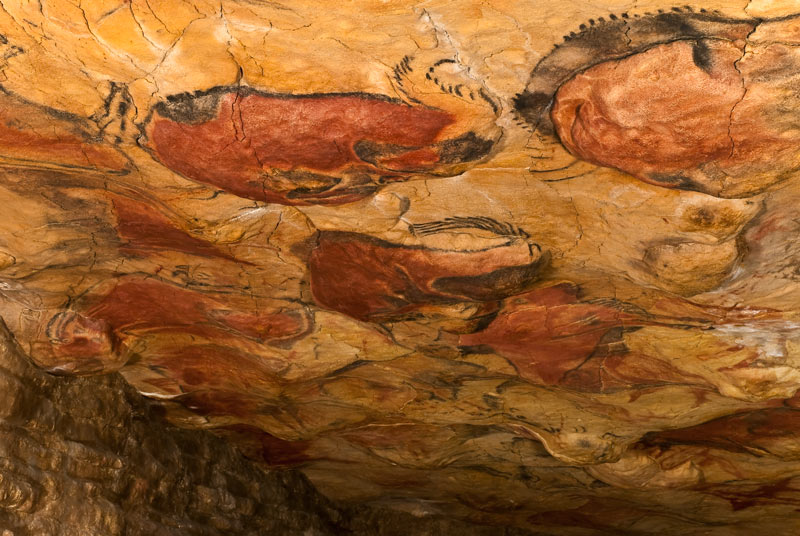
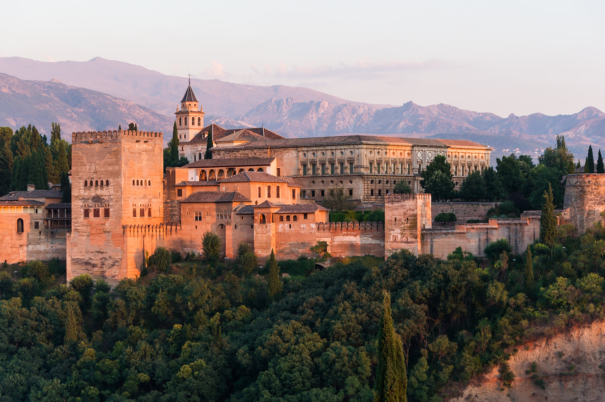
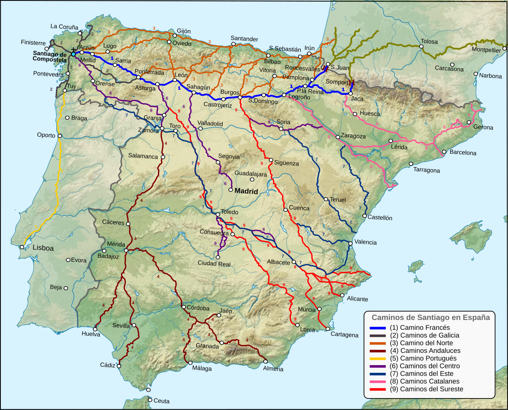
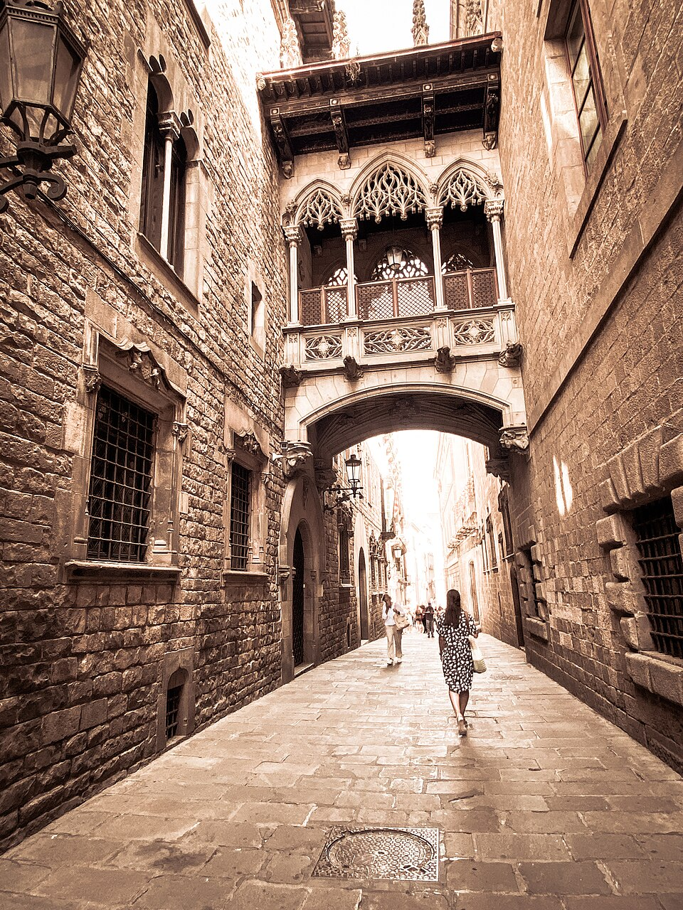
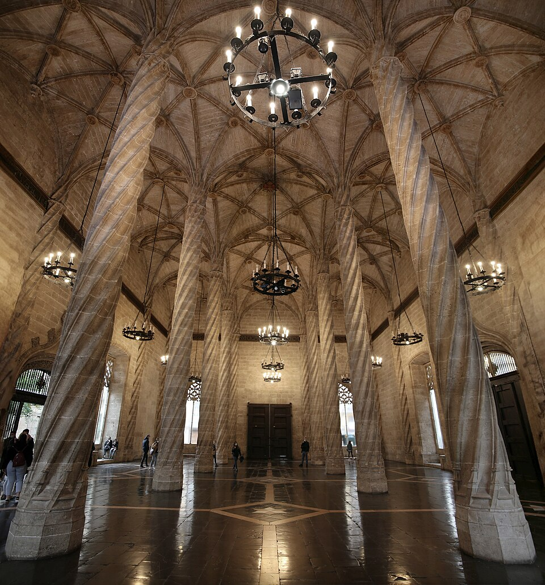
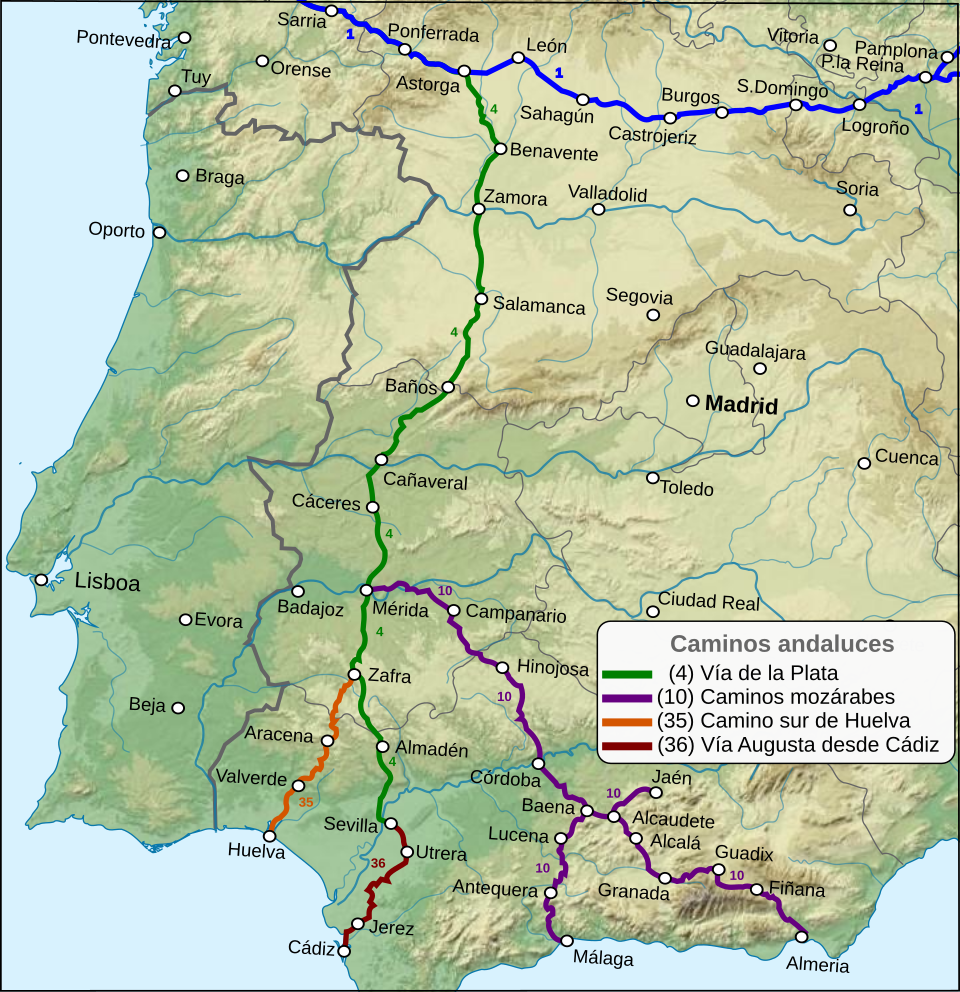

Llistat de Béns Culturals Nov 11, 2026 Llista de béns culturals: click a la imatge per veure a toda amplaria Imatge Nom Comunitat Any de declariació  Coves d'Altamira Cantàbria 1985  Alhambra de Granada Andalusia 1984  Camí de Santiago Galícia 1993  Barri Gòtic Catalunya 1984  Llotja de la Seda País Valencià 1996  Ruta de la Plata Diverses CCAA Pendent Total 6 béns culturals